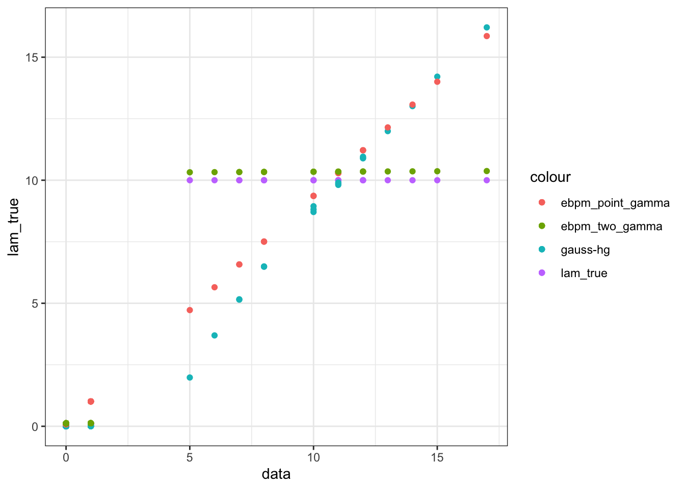

ebpm with gauss_gh
Last updated: 2020-01-17
Checks: 7 0
Knit directory: ebpmf_demo/
This reproducible R Markdown analysis was created with workflowr (version 1.5.0). The Checks tab describes the reproducibility checks that were applied when the results were created. The Past versions tab lists the development history.
Great! Since the R Markdown file has been committed to the Git repository, you know the exact version of the code that produced these results.
Great job! The global environment was empty. Objects defined in the global environment can affect the analysis in your R Markdown file in unknown ways. For reproduciblity it’s best to always run the code in an empty environment.
The command set.seed(20190923) was run prior to running the code in the R Markdown file. Setting a seed ensures that any results that rely on randomness, e.g. subsampling or permutations, are reproducible.
Great job! Recording the operating system, R version, and package versions is critical for reproducibility.
Nice! There were no cached chunks for this analysis, so you can be confident that you successfully produced the results during this run.
Great job! Using relative paths to the files within your workflowr project makes it easier to run your code on other machines.
Great! You are using Git for version control. Tracking code development and connecting the code version to the results is critical for reproducibility. The version displayed above was the version of the Git repository at the time these results were generated.
Note that you need to be careful to ensure that all relevant files for the analysis have been committed to Git prior to generating the results (you can use wflow_publish or wflow_git_commit). workflowr only checks the R Markdown file, but you know if there are other scripts or data files that it depends on. Below is the status of the Git repository when the results were generated:
Ignored files:
Ignored: .RData
Ignored: .Rhistory
Ignored: .Rproj.user/
Ignored: analysis/anchor_word_model_swimmer_cache/
Ignored: analysis/ebpm_two_gamma_debug2_cache/
Ignored: analysis/nmf_anchor_word3_cache/
Ignored: analysis/nmf_anchor_word4_cache/
Ignored: analysis/nmf_sparse10_cache/
Ignored: analysis/nmf_sparse8_cache/
Ignored: analysis/nmf_sparse9_cache/
Untracked files:
Untracked: Rplot.png
Untracked: Untitled.Rmd
Untracked: Untitled.html
Untracked: analysis/.ipynb_checkpoints/
Untracked: analysis/Experiment_ebpmf_simple.Rmd
Untracked: analysis/anchor_word_model1.Rmd
Untracked: analysis/anchor_word_model2.Rmd
Untracked: analysis/anchor_word_model3.Rmd
Untracked: analysis/debug_ebpmf_two_gamma.Rmd
Untracked: analysis/demo_ebpmf_beta_gamma.Rmd
Untracked: analysis/demo_ebpmf_two_gamma2.Rmd
Untracked: analysis/demo_ebpmf_two_gamma_cache_old/
Untracked: analysis/draft.Rmd
Untracked: analysis/ebpm_gamma_mixture_experiment.Rmd
Untracked: analysis/ebpm_two_gamma_test.R
Untracked: analysis/ebpm_two_gamma_test.Rmd
Untracked: analysis/ebpmf_demo.Rmd
Untracked: analysis/ebpmf_rank1_demo2.Rmd
Untracked: analysis/investigate_nmf_sparse.Rmd
Untracked: analysis/nmf_anchor_word4.Rmd
Untracked: analysis/nmf_symm.Rmd
Untracked: analysis/play_prior.Rmd
Untracked: analysis/plot_g.Rmd
Untracked: analysis/softmax_experiments.ipynb
Untracked: cache/
Untracked: code/anchor-word-recovery/
Untracked: data/anchor_word_model1.csv
Untracked: data/nmf_anchor_word3_A.csv
Untracked: data/nmf_anchor_word3_W.csv
Untracked: data/nmf_anchor_word3_X.csv
Untracked: data/nmf_anchor_word4_A.csv
Untracked: data/nmf_anchor_word4_W.csv
Untracked: data/nmf_sparse8_fit_ebpmf_gm_mle.Rds
Untracked: data/nmf_sparse8_fit_ebpmf_gm_mlem.Rds
Untracked: data/swimmer.mat
Untracked: figure/
Untracked: verbose_log_1571583163.21966.txt
Untracked: verbose_log_1571583324.71036.txt
Untracked: verbose_log_1571583741.94199.txt
Untracked: verbose_log_1571588102.40356.txt
Unstaged changes:
Modified: .gitignore
Modified: analysis/Compare_ebpmf_nmf.Rmd
Modified: analysis/Compare_ebvaepm_ebpm.Rmd
Modified: analysis/Experiment_ebpmf_rank1.Rmd
Modified: analysis/demo_ebpm_beta_gamma2.Rmd
Modified: analysis/ebpm_demo.Rmd
Modified: analysis/nmf_anchor_word2.Rmd
Modified: analysis/nmf_anchor_word3.Rmd
Modified: analysis/nmf_sparse.Rmd
Modified: analysis/nmf_sparse2.Rmd
Modified: analysis/nmf_sparse3.Rmd
Modified: analysis/nmf_sparse6.Rmd
Modified: analysis/nmf_sparse7.Rmd
Modified: analysis/nmf_sparse8.Rmd
Modified: analysis/nmf_sparse9.Rmd
Modified: analysis/softmax_experiments.Rmd
Modified: analysis/test_ebpm_gamma_mixture_single_scale.Rmd
Modified: code/misc.R
Modified: data/nmf_sparse8_fit_ebpmf_gm.Rds
Note that any generated files, e.g. HTML, png, CSS, etc., are not included in this status report because it is ok for generated content to have uncommitted changes.
These are the previous versions of the R Markdown and HTML files. If you’ve configured a remote Git repository (see ?wflow_git_remote), click on the hyperlinks in the table below to view them.
| File | Version | Author | Date | Message |
|---|---|---|---|---|
| Rmd | c31ca04 | zihao12 | 2020-01-17 | rerun compare_GH with new ebpm_two_gamma |
| html | 9cb8796 | zihao12 | 2019-12-03 | Build site. |
| Rmd | 42ef199 | zihao12 | 2019-12-03 | compare gh with ebpm |
| html | 56b957f | zihao12 | 2019-12-03 | Build site. |
| Rmd | f7d19c7 | zihao12 | 2019-12-03 | compare gh with ebpm |
I want to compare ebpm with the algorithm Gauss-HG propsed in paper Bayesian inference on quasi-sparse count data. Below I first copy from their analysis http://dattahub.github.io/GHstancodes , then compare ebpm with theirs.
library(rstan)
rstan_options(auto_write = TRUE)
options(mc.cores = parallel::detectCores())
library(ggplot2)
theme_set(theme_bw())
library(plyr)
library(dplyr)
library(reshape2)Gauss-HG algorithm# setup Stan Gauss-HG sampler
{
library(plyr)
library(rstan)
library(parallel)
library(rbenchmark)
#set_cppo("fast")
stan.gh.code = "
data{
int<lower=0> J;
int<lower=0> Y[J];
real<lower=0> alpha;
real<lower=0> a;
real<lower=0> b;
real<lower=0> gamma;
real<lower=0> phi;
}
parameters{
real<lower=0,upper=1> kappa[J];
real<lower=0> theta[J];
}
model{
for(i in 1:J) {
increment_log_prob((a-1)*log(kappa[i])+(b-1)*log(1-kappa[i])-gamma*log(1-phi*kappa[i]));
theta[i] ~ gamma(a, kappa[i]/(1-kappa[i]));
Y[i] ~ poisson(theta[i]);
}
}
"
stan.gh.fit = stan_model(model_code=stan.gh.code, model_name="GH")
}DIAGNOSTIC(S) FROM PARSER:
Info: increment_log_prob(...); is deprecated and will be removed in the future.
Use target += ...; instead.
Warning: The above code chunk cached its results, but it won’t be re-run if previous chunks it depends on are updated. If you need to use caching, it is highly recommended to also set knitr::opts_chunk$set(autodep = TRUE) at the top of the file (in a chunk that is not cached). Alternatively, you can customize the option dependson for each individual chunk that is cached. Using either autodep or dependson will remove this warning. See the knitr cache options for more details.
stan.iters = 10000
n.chains = 2
seed.val = 786
set.seed(seed.val)
n = 200; w = 0.9
y = rep(0,n); idx = rep(1,n)
lambdasparse = rep(0,n)
for (i in 1:n)
{
if(i<=round(n*w)){
lambdasparse[i]<-0.1
idx[i] <- 0}
else {lambdasparse[i] <-10}}
y = rpois(n,lambdasparse);
gamma = mean(kmeans(y,centers=2)$centers)
alpha = 0.01
a = 0.5; b = 0.5
gh.data = list('J'=n,'Y'=y, 'alpha' = alpha,'a' = a, 'b' = b, 'gamma' = gamma, 'phi' = 0.99)Gauss-HG{
gh.res = sampling(stan.gh.fit,
data = gh.data,
iter = stan.iters,
warmup = floor(stan.iters/2),
thin = 2,
pars = c('kappa','theta'),
init = 0,
seed = seed.val,
chains = 1)
gh.theta.smpls = extract(gh.res, pars=c('theta'), permuted=TRUE)[[1]]
gh.kappa.smpls = extract(gh.res, pars=c('kappa'), permuted=TRUE)[[1]]
gh.theta.mean = apply(gh.theta.smpls,2,mean)
gh.kappa.mean = apply(gh.kappa.smpls,2,mean)
gh.sample.data = melt(extract(gh.res, permuted=TRUE))
colnames(gh.sample.data) = c("iteration", "component", "value", "variable")
gh.sample.data= gh.sample.data %>%
filter(variable %in% c("theta","kappa"))
gh.sample.data.2 = gh.sample.data %>% group_by(component, variable) %>%
summarise(upper = quantile(value, prob=0.975),
lower = quantile(value, prob=0.225),
middle = mean(value))
}
SAMPLING FOR MODEL 'GH' NOW (CHAIN 1).
Chain 1:
Chain 1: Gradient evaluation took 0.000152 seconds
Chain 1: 1000 transitions using 10 leapfrog steps per transition would take 1.52 seconds.
Chain 1: Adjust your expectations accordingly!
Chain 1:
Chain 1:
Chain 1: Iteration: 1 / 10000 [ 0%] (Warmup)
Chain 1: Iteration: 1000 / 10000 [ 10%] (Warmup)
Chain 1: Iteration: 2000 / 10000 [ 20%] (Warmup)
Chain 1: Iteration: 3000 / 10000 [ 30%] (Warmup)
Chain 1: Iteration: 4000 / 10000 [ 40%] (Warmup)
Chain 1: Iteration: 5000 / 10000 [ 50%] (Warmup)
Chain 1: Iteration: 5001 / 10000 [ 50%] (Sampling)
Chain 1: Iteration: 6000 / 10000 [ 60%] (Sampling)
Chain 1: Iteration: 7000 / 10000 [ 70%] (Sampling)
Chain 1: Iteration: 8000 / 10000 [ 80%] (Sampling)
Chain 1: Iteration: 9000 / 10000 [ 90%] (Sampling)
Chain 1: Iteration: 10000 / 10000 [100%] (Sampling)
Chain 1:
Chain 1: Elapsed Time: 22.2665 seconds (Warm-up)
Chain 1: 21.9842 seconds (Sampling)
Chain 1: 44.2507 seconds (Total)
Chain 1:
Warning: The above code chunk cached its results, but it won’t be re-run if previous chunks it depends on are updated. If you need to use caching, it is highly recommended to also set knitr::opts_chunk$set(autodep = TRUE) at the top of the file (in a chunk that is not cached). Alternatively, you can customize the option dependson for each individual chunk that is cached. Using either autodep or dependson will remove this warning. See the knitr cache options for more details.
ebpmlibrary(ebpm)
fit_ebpm_gammamix = ebpm_gamma_mixture_single_scale(x = y, s = 1)
fit_ebpm_expmix = ebpm_exponential_mixture(x = y, s = 1)
fit_ebpm_pg = ebpm_point_gamma(x = y, s = 1)
fit_ebpm_tg = ebpm_two_gamma(x = y, s = 1, rel_tol = 1e-8)fit_df = data.frame(
data = y,
lam_true = lambdasparse,
gh = gh.theta.mean,
ebpm_pg = fit_ebpm_pg$posterior$mean,
ebpm_tg = fit_ebpm_tg$posterior$mean,
ebpm_expmix = fit_ebpm_expmix$posterior$mean,
ebpm_gammamix = fit_ebpm_gammamix$posterior$mean
)
ggplot(data = fit_df)+
geom_point(aes(x = data, y = lam_true, color = "lam_true"))+
geom_point(aes(x = data, y = gh, color = "gauss-hg"))+
geom_point(aes(x = data, y = ebpm_pg, color = "ebpm_point_gamma"))+
geom_point(aes(x = data, y = ebpm_tg, color = "ebpm_two_gamma"))
Take a closer look at those quasi-zeros (counts that comes from small lambda)
fit_df_small = fit_df[fit_df$lam_true < 1, ]
ggplot(data = fit_df_small)+
geom_point(aes(x = data, y = lam_true, color = "lam_true"))+
geom_point(aes(x = data, y = gh, color = "gauss_hg"))+
geom_point(aes(x = data, y = ebpm_pg, color = "ebpm_point_gamma"))+
geom_point(aes(x = data, y = ebpm_tg, color = "ebpm_two_gamma"))
| Version | Author | Date |
|---|---|---|
| 56b957f | zihao12 | 2019-12-03 |
Below I show the divergence between estimation and truth (Root Mean Squared Error, Kullback–Leibler divergence , Jensen-Shannon)
rmse <- function(true, est){
return(sqrt(mean((true - est)^2)))
}
KL <- function(true,est){
sum(ifelse(true==0,0,true * log(true/est)) + est - true)
}
JS <- function(true,est){
0.5*(KL(true, est) + KL(est, true))
}
RMSEs = c(rmse(lambdasparse, gh.theta.mean), rmse(lambdasparse, fit_ebpm_gammamix$posterior$mean),
rmse(lambdasparse, fit_ebpm_expmix$posterior$mean),
rmse(lambdasparse, fit_ebpm_pg$posterior$mean),
rmse(lambdasparse,fit_ebpm_tg$posterior$mean))
KLs = c(KL(lambdasparse, gh.theta.mean), KL(lambdasparse, fit_ebpm_gammamix$posterior$mean),
KL(lambdasparse, fit_ebpm_expmix$posterior$mean),
KL(lambdasparse, fit_ebpm_pg$posterior$mean),
KL(lambdasparse,fit_ebpm_tg$posterior$mean))
JSs = c(JS(lambdasparse, gh.theta.mean), rmse(lambdasparse, fit_ebpm_gammamix$posterior$mean),
JS(lambdasparse, fit_ebpm_expmix$posterior$mean),
JS(lambdasparse, fit_ebpm_pg$posterior$mean),
JS(lambdasparse,fit_ebpm_tg$posterior$mean))
data.frame(RMSE = RMSEs, KL = KLs, JS = JSs, row.names = c("guass-hg", "ebpm_gammamix", "ebpm_expmix", "ebpm_point_gamma", "ebpm_two_gamma")) RMSE KL JS
guass-hg 1.1529090 88.3375455 60.4323648
ebpm_gammamix 0.9544262 24.7393189 0.9544262
ebpm_expmix 0.8374462 12.2507980 13.6031322
ebpm_point_gamma 0.9419139 24.2177883 32.0882859
ebpm_two_gamma 0.1115488 0.5186065 0.5334489GH shrinks too much. Type-I error seems indeed pretty small, as proved in the paper. The expense is the very bad estimates for bigger counts. Maybe need to choose different hyperparameters.
ebpm_point_gamma fails for those “quasi-sparse” counts, the point-mass at 0 for prior won’t affect their posteriors. They also affect the estimation for larger counts.
ebpm_two_gamma performs the best on average. It slightly overestimates those “quasi-sparse” counts, but is very close to truth overall.
ebpm_expmix and ebpm_gammamix does not do well. Only two prior components are effectively used, and certainly not as well-chosen as gamma_two_gamma. (didn’t show in the plot)
sessionInfo()R version 3.5.1 (2018-07-02)
Platform: x86_64-apple-darwin15.6.0 (64-bit)
Running under: macOS 10.14
Matrix products: default
BLAS: /Library/Frameworks/R.framework/Versions/3.5/Resources/lib/libRblas.0.dylib
LAPACK: /Library/Frameworks/R.framework/Versions/3.5/Resources/lib/libRlapack.dylib
locale:
[1] en_US.UTF-8/en_US.UTF-8/en_US.UTF-8/C/en_US.UTF-8/en_US.UTF-8
attached base packages:
[1] parallel stats graphics grDevices utils datasets methods
[8] base
other attached packages:
[1] ebpm_0.0.0.9010 rbenchmark_1.0.0 reshape2_1.4.3
[4] dplyr_0.8.1 plyr_1.8.4 rstan_2.19.2
[7] ggplot2_3.2.1 StanHeaders_2.19.0
loaded via a namespace (and not attached):
[1] gtools_3.8.1 tidyselect_0.2.5 xfun_0.8
[4] purrr_0.3.2 colorspace_1.4-1 htmltools_0.3.6
[7] stats4_3.5.1 loo_2.1.0 yaml_2.2.0
[10] rlang_0.4.1 pkgbuild_1.0.3 mixsqp_0.2-3
[13] later_0.8.0 pillar_1.4.2 glue_1.3.1
[16] withr_2.1.2 matrixStats_0.54.0 stringr_1.4.0
[19] munsell_0.5.0 gtable_0.3.0 workflowr_1.5.0
[22] codetools_0.2-16 evaluate_0.14 labeling_0.3
[25] inline_0.3.15 knitr_1.25 callr_3.2.0
[28] httpuv_1.5.1 ps_1.3.0 Rcpp_1.0.2
[31] promises_1.0.1 scales_1.0.0 backports_1.1.5
[34] fs_1.3.1 gridExtra_2.3 digest_0.6.22
[37] stringi_1.4.3 processx_3.3.1 grid_3.5.1
[40] rprojroot_1.3-2 cli_1.1.0 tools_3.5.1
[43] magrittr_1.5 lazyeval_0.2.2 tibble_2.1.3
[46] crayon_1.3.4 whisker_0.3-2 pkgconfig_2.0.3
[49] prettyunits_1.0.2 assertthat_0.2.1 rmarkdown_1.13
[52] R6_2.4.0 git2r_0.26.1 compiler_3.5.1